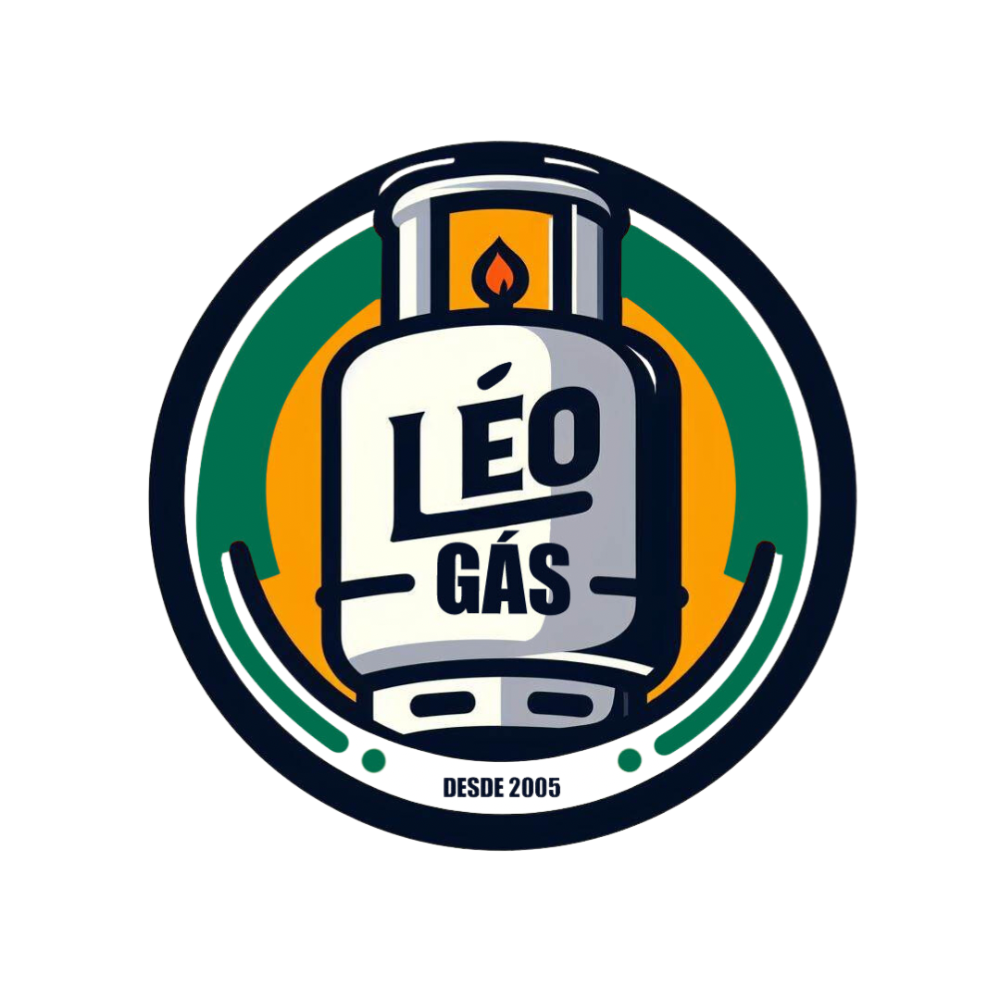

<aside class="sidebar" [class.show]="isOpen">
  <div class="sidebar-header">
    
  </div>

  <nav class="sidebar-menu">
    <a routerLink="/painel-principal" 
       routerLinkActive="active" 
       [routerLinkActiveOptions]="{exact: true}" 
       class="menu-item">
      <svg xmlns="http://www.w3.org/2000/svg" width="20" height="20" viewBox="0 0 24 24" fill="none" stroke="currentColor" stroke-width="2" stroke-linecap="round" stroke-linejoin="round">
        <rect x="3" y="3" width="7" height="7"/>
        <rect x="14" y="3" width="7" height="7"/>
        <rect x="14" y="14" width="7" height="7"/>
        <rect x="3" y="14" width="7" height="7"/>
      </svg>
      <span>Painel Principal</span>
    </a>

    <a routerLink="/recebimentos-pendentes" 
       routerLinkActive="active" 
       [routerLinkActiveOptions]="{exact: true}" 
       class="menu-item">
      <svg xmlns="http://www.w3.org/2000/svg" width="20" height="20" viewBox="0 0 24 24" fill="none" stroke="currentColor" stroke-width="2" stroke-linecap="round" stroke-linejoin="round">
        <line x1="12" y1="1" x2="12" y2="23"/>
        <path d="M17 5H9.5a3.5 3.5 0 0 0 0 7h5a3.5 3.5 0 0 1 0 7H6"/>
      </svg>
      <span>Recebimentos Pendentes</span>
    </a>

    <a routerLink="/adiantamento-salarial" 
       routerLinkActive="active" 
       [routerLinkActiveOptions]="{exact: true}" 
       class="menu-item">
      <svg xmlns="http://www.w3.org/2000/svg" width="20" height="20" viewBox="0 0 24 24" fill="none" stroke="currentColor" stroke-width="2" stroke-linecap="round" stroke-linejoin="round">
        <rect x="2" y="5" width="20" height="14" rx="2"/>
        <line x1="2" y1="10" x2="22" y2="10"/>
      </svg>
      <span>Adiantamento Salarial</span>
    </a>
    
    <a routerLink="/clientes" 
       routerLinkActive="active" 
       [routerLinkActiveOptions]="{exact: true}" 
       class="menu-item">
      <svg xmlns="http://www.w3.org/2000/svg" width="20" height="20" viewBox="0 0 24 24" fill="none" stroke="currentColor" stroke-width="2" stroke-linecap="round" stroke-linejoin="round">
        <path d="M17 21v-2a4 4 0 0 0-4-4H5a4 4 0 0 0-4 4v2"/>
        <circle cx="9" cy="7" r="4"/>
        <path d="M23 21v-2a4 4 0 0 0-3-3.87"/>
        <path d="M16 3.13a4 4 0 0 1 0 7.75"/>
      </svg>
      <span>Clientes</span>
    </a>
    
    <a routerLink="/produtos" 
       routerLinkActive="active" 
       [routerLinkActiveOptions]="{exact: true}" 
       class="menu-item">
      <svg xmlns="http://www.w3.org/2000/svg" width="20" height="20" viewBox="0 0 24 24" fill="none" stroke="currentColor" stroke-width="2" stroke-linecap="round" stroke-linejoin="round">
        <path d="M21 16V8a2 2 0 0 0-1-1.73l-7-4a2 2 0 0 0-2 0l-7 4A2 2 0 0 0 3 8v8a2 2 0 0 0 1 1.73l7 4a2 2 0 0 0 2 0l7-4A2 2 0 0 0 21 16z"/>
        <polyline points="3.27 6.96 12 12.01 20.73 6.96"/>
        <line x1="12" y1="22.08" x2="12" y2="12"/>
      </svg>
      <span>Produtos</span>
    </a>
       
    <a routerLink="/entregadores" 
       routerLinkActive="active" 
       [routerLinkActiveOptions]="{exact: true}" 
       class="menu-item">
      <svg xmlns="http://www.w3.org/2000/svg" width="20" height="20" viewBox="0 0 24 24" fill="none" stroke="currentColor" stroke-width="2" stroke-linecap="round" stroke-linejoin="round">
        <path d="M5 18a3 3 0 1 0 0-6 3 3 0 0 0 0 6Z"/>
        <path d="M19 18a3 3 0 1 0 0-6 3 3 0 0 0 0 6Z"/>
        <path d="M9 15V9h3l3 3h4l-2-4h-4V7h6l3 4v4"/>
        <path d="M5 15h9"/>
        <path d="M11 9l-1-4"/>
      </svg>
      <span>Entregadores</span>
    </a>
  </nav>
</aside>